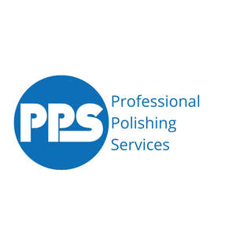

Trade Mark Journal No.2025/013 28 March 2025
UK00004168499 4 March 2025 (2,7,40,41,42)

- Class 2
- Protective surface coatings for metals; protective coatings for metal surfaces; protective coatings for metals; protective coatings for application in liquid form for use on metals; protective coatings with sealing qualities for use on metals; metal finishings; non-metallic coatings for metals; coating for metals; protective coatings of plastics for protection of metal surfaces; protective coating of plastics for protection of metal coatings; coating of plastics over metal surfaces; coating of plastics over metal coatings; preparations for the treatment of metal surfaces to resist tarnishing; preparations for the treatment of metal surfaces to resist corrosion; rust preventative substances for application to metal surfaces.
- Class 7
- Metal finishing plant.
- Class 40
- Abrasive polishing; abrasive polishing of metals; polishing of metals; processing of metal surfaces by abrasive polishing; processing of metal surfaces by precision grinding; surface polishing; plating of metals; metal polishing; metal plating; metal coating; stainless steel polishing services; metal finishing services; applying finish to stainless steel sheets and coils; metal treatment services; application of protective surface coatings to machines and tools; treatment and coating of metal surfaces; surface finishing and polishing of metal articles.
- Class 41
- Training services; training services in the field of metal polishing.
- Class 42
- Consultation services relating to metal polishing; consultation services relating to protection of metal surfaces; advisory services relating to protection of metals; technical consultation services; consultation services relating to metal; inspection services for metal; inspection services for metal surfaces; surface inspection services; testing, analysis and evaluation of metals of others.
PROFESSIONAL POLISHING SERVICES LIMITED
Representative: Burley Law Limited